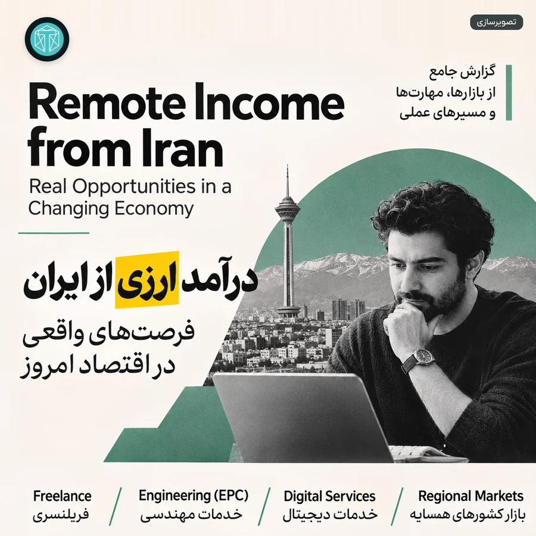

درآمد ارزی از ایران: فرصتهای واقعی در اقتصاد امروز
Remote income from Iran: real opportunities in a changing economy
بازار، حوزهها، مشترییابی، دریافت پول و آنچه واقعاً شدنی است
The market, the fields, finding clients, getting paid, and what is actually doable
ریال در یک سال گذشته بیش از ۵۵٪ از ارزش خود را در برابر دلار از دست داده (الجزیره، اکتبر ۲۰۲۶). در چنین شرایطی، فرصتی هست که کمتر دربارهاش حرف زده میشود: فروش تخصص، دانش و توان مهندسی به بازارهای بیرون از ایران، بدون مهاجرت. این گزارش میگوید بازار چقدر بزرگ است، در چه حوزههایی میشود کار کرد، مشتری را کجا و چطور پیدا کنیم، پول را چطور میشود گرفت و چقدر از همهی اینها واقعی است.
در یک نگاه
- بازار: خدمات قابلارائه از راه دیجیتال ۵۶٪ صادرات خدمات جهان است و در یک دههی گذشته سالانه ۷٫۱٪ رشد کرده (UNCTAD)
- مزیت ایران: هزینهی ارزیِ پایینترِ نیروی متخصص، سابقهی مهندسی و نزدیکی به بازارهای منطقه؛ ولی ارزانی بهتنهایی مزیت پایدار نیست
- حوزهها: از نرمافزار، طراحی و ترجمه تا نقشهی مهندسی و پروژههای EPC
- سه مانع اصلی: اینترنت ناپایدار، تحریمها و مسیر دریافت پول
- جمعبندی: فرصت واقعی است، ولی «در یک سایت فریلنسری ثبتنام کن و شروع کن» مسیر ساکنان ایران نیست. باید مشتری مستقیم پیدا کرد و مسیر پرداخت را پیش از شروع پروژه روشن کرد.
1. جهان به سمت صادرات خدمات حرکت کرده است
طبق بهروزرسانی تجارت جهانی UNCTAD (سپتامبر ۲۰۲۶)، خدمات قابلارائه از راه دیجیتال اکنون ۵۶٪ صادرات خدمات جهاناند و در ده سال گذشته بهطور میانگین سالانه ۷٫۱٪ رشد کردهاند. سهم خدمات از کل صادرات جهان هم در ۲۰۲۵ به ۲۷٪ رسیده است.
- در ۲۰۲۳ ارزش جهانی صادرات خدمات قابلارائه از راه دیجیتال حدود ۴٫۵ تریلیون دلار بود و کشورهای در حال توسعه برای نخستین بار از مرز ۱ تریلیون دلار گذشتند (UNCTAD)
- بانک جهانی تعداد شاغلان پروژهای آنلاین (گیگ آنلاین) را ۱۵۴ تا ۴۳۵ میلیون نفر برآورد کرده؛ یعنی ۴٫۴ تا ۱۲٫۵٪ نیروی کار جهان (بانک جهانی، ۲۰۲۳)
این بازار فقط فریلنسرها نیستند. خدمات مالی، نرمافزار، مشاوره، مهندسی، معماری، آموزش و صنایع خلاق هم در آناند. نکتهی مهم این است که برخلاف صادرات کالا، برای بخشهایی از آن به کارخانه، انبار، کشتی یا سرمایهی سنگین نیاز نیست. محصول صادراتی گاهی یک فایل است، یک نرمافزار، یک نقشهی مهندسی یا چند ساعت کار تخصصی.
2. آیا ایران واقعاً مزیت دارد؟
یک مثال فرضی: شرکتی خارجی برای بخشی از طراحی محصولاتش ماهانه ۳۰۰۰ دلار خرج میکند. اگر تیمی ایرانی همان کیفیت را با ۱۵۰۰ دلار ارائه دهد، شرکت هزینهاش را نصف کرده و تیم ایرانی منبع درآمد ارزی پیدا کرده است. این فقط مثال است، ولی منطق برونسپاری در دنیا همین است.
پنج مزیت بالقوهی ایران:
- هزینهی ارزیِ نسبتاً پایین نیروی انسانی در بسیاری از تخصصها
- سابقهی صنعتی و مهندسی در حوزههای مختلف
- نزدیکی جغرافیایی به بازارهای منطقه
- حضور ایرانیان متخصص و صاحبکسبوکار در کشورهای مختلف
- امکان ارائهی بسیاری از خدمات بدون جابهجایی فیزیکی نیروی انسانی
ولی دو هشدار:
- هند، پاکستان، مصر، ویتنام و فیلیپین هم رقبای جدی این بازارند. ارزان بودن مزیت پایدار نیست؛ مزیت واقعی ترکیبی از تخصص، قیمت رقابتی، کیفیت و قابلاعتماد بودن است.
- افت ریال هزینهی دلاریِ نیروی شما را پایین آورده، اما هزینههای خودتان (اجاره، تجهیزات، اینترنت) هم بالا میرود و اگر درآمد را دیر یا به ریال بگیرید، همان مزیت را از دست میدهید.
3. شانزده حوزهی درآمد ارزی
اعداد جدول نمونههایی برای قیمتگذاری اولیه و بررسی اقتصادی پروژهاند؛ نه میانگین تأییدشدهی بازار و نه تضمین درآمد.
| حوزه | چه خدماتی | نمونهی قیمت اولیه |
|---|---|---|
| ۱. برنامهنویسی | سایت، اپلیکیشن، فروشگاه اینترنتی، نرمافزار سازمانی | ۳۰۰ تا ۵۰۰۰ دلار برای پروژهی کوچک تا متوسط |
| ۲. هوش مصنوعی و اتوماسیون | خودکارسازی سفارش، پاسخگویی به مشتری، پردازش اسناد، دستیار هوشمند | ۳۰۰ تا ۳۰۰۰ دلار برای هر پروژه |
| ۳. معماری و طراحی داخلی | مدلسازی سهبعدی، رندر، طراحی نما، نقشهی اجرایی (زیر نظر مهندس دارای مجوز محلی) | ۱۰۰ تا ۲۵۰۰ دلار برای هر سفارش |
| ۴. طراحی صنعتی و مکانیک | طراحی قطعه، قالب، تجهیزات صنعتی؛ SolidWorks و AutoCAD | ۲۰۰ تا ۳۰۰۰ دلار برای هر پروژه |
| ۵. برق و الکترونیک | طراحی مدار، PCB، سیستم کنترل، تجهیزات الکترونیکی | ۳۰۰ تا ۵۰۰۰ دلار برای هر پروژه |
| ۶. گرافیک و هویت بصری | بستهبندی، کاتالوگ، تبلیغات، برند، رابط کاربری | ۵۰ تا ۱۵۰۰ دلار برای هر سفارش |
| ۷. تدوین ویدیو و انیمیشن | محتوای یوتیوب، ویدیوی تبلیغاتی، موشنگرافیک، آموزش تصویری | ۵۰ تا ۲۰۰۰ دلار برای هر سفارش |
| ۸. بازاریابی دیجیتال و سئو | مدیریت محتوا، بهینهسازی سایت، تحلیل رقبا، شبکههای اجتماعی | ۲۰۰ تا ۱۵۰۰ دلار برای قرارداد ماهانه |
| ۹. ترجمه و بومیسازی | اسناد فنی، نرمافزار، کاتالوگ؛ فارسی، عربی، ترکی و انگلیسی | ۵۰ تا ۵۰۰ دلار برای سفارش کوچک |
| ۱۰. آموزش آنلاین | فارسی، ریاضی، برنامهنویسی، موسیقی و دروس مهندسی برای مخاطب خارج از کشور | ۱۰ تا ۴۰ دلار برای هر ساعت |
| ۱۱. برونسپاری اداری (BPO) | ثبت اطلاعات، مدیریت سفارش، گزارش، پردازش فاکتور، دستیار اداری | ۲۰۰ تا ۱۰۰۰ دلار برای قرارداد ماهانهی پارهوقت |
| ۱۲. تأمین کالا و خدمات | شناسایی تولیدکننده، کنترل کیفیت، مقایسهی قیمت (فقط در معاملات مجاز) | کارمزد یا قرارداد خدماتی |
| ۱۳. بازیسازی و محصول دیجیتال | طراحی کاراکتر، مدل سهبعدی، افزونه، قالب سایت، فایل آموزشی | درآمد پروژهای یا فروش چندبارهی محصول |
| ۱۴. گردشگری سلامت | دندانپزشکی، درمان و توانبخشی برای بیمار خارجی، در مراکز دارای مجوز | درآمد ارزی از ارائهی حضوری در ایران |
| ۱۵. تعمیرات و خدمات صنعتی | عیبیابی ماشینآلات، آموزش تعمیرکار، خدمات پس از فروش، نگهداری تجهیزات | قرارداد پروژهای یا دورهای با شرکتهای منطقه |
| ۱۶. مهندسی و پیمانکاری EPC | طراحی، تأمین تجهیزات، اجرا و راهاندازی پروژههای صنعتی و عمرانی | از سفارش مهندسی کوچک تا قرارداد چندمیلیوندلاری |
کدامها برای شروع مناسبترند؟ آنهایی که به سرمایهی اولیه و اینترنت دائمی کمتر نیاز دارند: نقشهی مهندسی، مدلسازی سهبعدی، ترجمهی فنی و طراحی گرافیک. حوزههای ۱۴ و ۱۵ مشتری را به ایران میآورند یا به قرارداد با شرکتهای منطقه نیاز دارند و سرعتشان کمتر است، ولی درآمدشان معمولاً بزرگتر است.
4. فرصت بزرگتر: صادرات خدمات مهندسی و EPC
EPC مخفف Engineering, Procurement and Construction است؛ یعنی طراحی مهندسی، تأمین تجهیزات و اجرای پروژه. ایران در این حوزه از صفر شروع نمیکند. آمارهای رسمی (که هر کدام تعریف و دورهی خودشان را دارند) این را نشان میدهند:
- طبق اظهارات مسئولان، در ۲۰۱۲ تا ۲۰۱۷ حدود ۴ میلیارد دلار خدمات فنیومهندسی به عراق صادر شد؛ ۸۸ پروژه توسط ۴۱ شرکت (به نقل از تسنیم؛ ما مستقل تأیید نکردهایم)
- سازمان توسعهی تجارت برای سال ۱۴۰۴ حدود ۳ میلیارد دلار صادرات خدمات اعلام کرده که حدود ۱٫۸ میلیارد آن خدمات فنیومهندسی است؛ رشد ۱۴۰٪ نسبت به حدود ۷۹۰ میلیون دلار سال قبل (Tehran Times، Iran Daily). خود گزارشها در دستهبندی کاملاً همخوان نیستند.
- ششماههی نخست ۱۴۰۴، صادرات اعلامشدهی این خدمات به عراق حدود ۱۲۸ میلیون دلار گزارش شد (Tehran Times)
یک هشدار مهم: اینها اظهارات رسمیاند، نه ارز وصولشدهی حسابرسیشده. ولی سابقه نشان میدهد صادرات مهندسی برای ایران فقط یک ایده نیست؛ هرچند توسعهی دوبارهی آن با مانعهای جدی روبهروست.
چه خدماتی قابلعرضه است؟
| صنعت | خدمات قابل ارائه |
|---|---|
| ساختمان | معماری، سازه، تأسیسات مکانیکی |
| برق | طراحی تابلو برق، روشنایی، شبکهی توزیع |
| آب | تصفیهخانه، پمپاژ، آبیاری |
| کارخانه | طراحی خط تولید و اتوماسیون |
| کشاورزی | گلخانه و سیستمهای آبیاری |
| ارتباطات | شبکه، فیبر نوری، زیرساخت |
| صوت و تصویر | سیستم کنفرانس، پیجینگ، صوت عمومی |
| انرژی | مطالعه و طراحی پروژههای مجاز |
| حملونقل | طراحی سازه و زیرساختهای عمرانی |
یک دفتر مهندسی ایرانی لازم نیست پیمانکار اصلی یک پروژهی ۵۰ میلیون دلاری باشد. میتواند فقط قرارداد طراحی نقشههای برق، مدلسازی ساختمان یا تهیهی مستندات فنی را بگیرد. این مدل به سرمایهی کمتر، ضمانتنامهی محدودتر و حضور فیزیکی کمتری نیاز دارد.
نمونهی واقعی: «اوما اویا» در سریلانکا. شرکت ایرانی فراب پروژهی چندمنظورهی اوما اویا را اجرا کرد که ۲۴ آوریل ۲۰۲۴ رسماً افتتاح شد.
| مشخصات پروژه | مقدار |
|---|---|
| هزینه | حدود ۵۱۴ تا ۵۲۹ میلیون دلار (بسته به منبع) |
| ظرفیت نیروگاه برقآبی | ۱۲۰ مگاوات |
| انتقال سالانهی آب | حدود ۱۴۵ میلیون مترمکعب |
| سهم تأمین مالی دولت ایران | حدود ۸۵٪ |
منابع: Daily FT سریلانکا و ویکیپدیا. این پروژه نشان میدهد ایران توان مدیریت پروژههای بزرگ را دارد، ولی الگوی یک شرکت کوچک نیست: بخش بزرگی از تأمین مالی آن از ایران بود، سالها طول کشید و پروژه از نظر زیستمحیطی هم نقد شد. درس واقعیاش مدیریت ریسک قرارداد است.
5. کدام کشورها؟
اینها بازارهای بالقوهی بازاریابیاند؛ نه تضمین عقد قرارداد یا انتقال پول. ستون ریسک ارزیابی تحلیلی دیتومان است، نه آمار رسمی.
| کشور | حوزههای پیشنهادی | نکتهی ریسک |
|---|---|---|
| 🇮🇶 عراق | ساختمان، تأسیسات، برق، آب، تجهیزات صنعتی | مسیر پرداخت و امنیت؛ سابقهی همکاری دارد |
| 🇴🇲 عمان | مهندسی، گردشگری، نرمافزار، طراحی | بانک و ویزا را پیش از قرارداد بررسی کنید |
| 🇦🇪 امارات | بازاریابی، نرمافزار، معماری، خدمات شرکتی | محدودیتهای بانکی و حقوقی |
| 🇶🇦 قطر | تأسیسات، معماری، فناوری، خدمات تخصصی | بازار کوچک و محتاط |
| 🇦🇲 ارمنستان | نرمافزار، طراحی، خدمات دیجیتال | بانکها مالکان ایرانی را سختتر بررسی میکنند |
| 🇹🇷 ترکیه | طراحی صنعتی، قطعهسازی، تجارت | رقابت شدید |
| 🇺🇿 ازبکستان | کشاورزی، نساجی، صنعت، مهندسی | کمشناخته؛ شریک محلی لازم است |
| 🇰🇿 قزاقستان | ماشینآلات، کشاورزی، خدمات صنعتی | کمشناخته؛ شریک محلی لازم است |
| 🇦🇫 افغانستان | آموزش، ساختمان، برق، خدمات فارسیزبان | ریسک امنیتی و بانکی بالا |
| 🇵🇰 پاکستان | خدمات صنعتی، کشاورزی، طراحی | ریسک بانکی و رقابت |
عراق: نزدیکی جغرافیایی، تجربهی قبلی شرکتهای ایرانی و شناخت نسبی بازار، آن را به یکی از اولین گزینههای بررسی تبدیل میکند.
عمان: دفاتر معماری، شرکتهای ساختمانی، هتلها و کسبوکارهای کوچک میتوانند مشتری خدمات طراحی و مهندسی باشند.
امارات: شرکتهایی که بهدنبال کاهش هزینهی طراحی، تولید محتوا، نرمافزار و بازاریابیاند مشتری بالقوهاند؛ محدودیتهای بانکی و حقوقی را باید پیشتر بررسی کرد.
آسیای مرکزی: خدمات کشاورزی، آبیاری، تأسیسات، تجهیزات صنعتی و طراحی خط تولید ارزش بررسی دارند.
دربارهی ثبت شرکت در کشور ثالث: ثبت شرکت با مالک خارجی در ارمنستان بدون محدودیت تابعیت ممکن است و ظرف یک روز کاری انجام میشود، ولی از ۱۲ اوت ۲۰۲۶ بانکها طبق مصوبهی بانک مرکزی ارمنستان باید مالکان را از نظر ریسک تحریم غربالگری کنند و ایران پرریسک حساب میشود (شرح یک دفتر حقوقی ارمنی). در گرجستان نزدیک ۱۳ هزار شرکت ایرانی ثبت شده، اما همین موضوع شبههی دور زدن تحریمها را هم دامن زده و مقررات بانکی برای ایرانیان سختتر شده (RFE/RL). نتیجه: شرکت خارجی تحریم را برطرف نمیکند؛ فقط وقتی کارآمد است که فعالیتش واقعی، مالکیتش شفاف و قراردادش قانونی باشد.
6. مشتری را کجا و چطور پیدا کنیم؟
پلتفرمها و سایتها:
| سایت یا راه | وضعیت برای ساکنان ایران | نکته |
|---|---|---|
| Upwork | ثبتنام و استفاده ممنوع است | طبق صفحهی پشتیبانی ساکنان ایران حق ثبتنام ندارند |
| Freelancer.com | طبق گزارشها محدودیت دارد | صفحهی رسمی را ما نتوانستیم باز کنیم؛ شرایط را خودتان بخوانید |
| دیگر پلتفرمهای آمریکایی و اروپایی | معمولاً تحریمها اعمال میشود | قبل از ثبتنام، شرایط استفادهی هر پلتفرم را بخوانید |
| GitHub | برای توسعهدهندگان در ایران در دسترس است | طبق اعلام خود GitHub با مجوز OFAC (۲۰۲۱، بهروزرسانی ۲۰۲۲)؛ برای نمونهکار و متنباز، نه بازار کار |
| LinkedIn، Behance، Dribbble | ویترین حرفهای | برای دیدهشدن و نمونهکار؛ ما شرایط آنها را برای ساکنان ایران بررسی نکردهایم |
| پلتفرمهای عربی (مثل مستقل و خمسات) | بازار عربی | شرایط ثبتنام و پرداخت برای ساکنان ایران را ما تأیید نکردهایم |
نتیجه: برای ساکنان ایران، مسیر اصلی معمولاً قرارداد مستقیم است، نه بازار باز فریلنسری.
هفت گام برای پیدا کردن مشتری:
- گام ۱ — تخصصی انتخاب کن. «برنامهنویس» بودن کافی نیست؛ «طراح نقشهی تأسیسات برای ساختمانهای عراق» یک پیشنهاد روشن است.
- گام ۲ — سه نمونهکار قوی بساز. با توضیح مسئله، کار انجامشده و نتیجه؛ به انگلیسی و، اگر هدف بازار عرب است، عربی.
- گام ۳ — بازار هدف را مشخص کن. یک یا دو کشور و یک صنعت، نه همهی دنیا.
- گام ۴ — مشتری را مستقیم پیدا کن. لینکدین، ایمیل مستقیم به شرکتها، نمایشگاهها و اتاقهای بازرگانی مشترک، سازمان توسعهی تجارت و ایرانیان متخصص خارج از کشور.
- گام ۵ — با یک پروژهی کوچک پولی شروع کن. مشتری ریسک کمتری حس میکند و شما اعتماد میسازید.
- گام ۶ — پیش از شروع، مسیر دریافت پول را روشن کن. این مهمترین گام است (بخش ۸).
- گام ۷ — برای قطعی اینترنت برنامه داشته باش. تحویل مرحلهای، نسخهی پشتیبان محلی و زمانبندی واقعبینانه در قرارداد.
7. اینترنت: بزرگترین مانع صادرات دیجیتال
نمیشود از درآمد ارزی گفت و وضعیت اینترنت ایران را نادیده گرفت.
- طبق Internet Society Pulse، قطع گستردهی اینترنت ایران از ۸ ژانویه تا ۲۶ مه ۲۰۲۶ حدود ۱۳۸ روز (۱۳۷ روز و ۲۱ ساعت) طول کشید؛ شدت اختلال در همهی این مدت یکسان نبود.
- پس از وصل شدن دوبارهی اینترنت هم محدودیتهای سنگین ادامه داشت (OPB).
- خسارت: عضوی از اتاق بازرگانی ایران زیان مستقیم را روزانه ۳۰ تا ۴۰ میلیون دلار و زیان غیرمستقیم را حدود دو برابر آن برآورد کرده (AP). برآوردها فرق زیادی دارند؛ ماشینحساب Internet Society حدود ۱٫۲۷ میلیون دلار در روز میدهد. اینها برآورد اعلامشدهاند، نه خسارت حسابرسیشده.
برای مشتری خارجی، قطعی اینترنت فقط یک مشکل فنی نیست؛ یعنی تأخیر تحویل، توقف پشتیبانی و ریسک بیشتر. پس بهتر است ابتدا سراغ کارهایی بروید که به اتصال دائمی نیاز ندارند:
| نوع فعالیت | وابستگی به اینترنت پایدار |
|---|---|
| طراحی نقشهی مهندسی | کم |
| طراحی گرافیک | کم |
| ترجمهی اسناد | کم |
| مدلسازی سهبعدی | کم |
| تدوین ویدیو | متوسط |
| توسعهی نرمافزار | متوسط |
| مدیریت شبکهی اجتماعی | زیاد |
| تدریس زندهی آنلاین | زیاد |
| پشتیبانی لحظهای مشتری | بسیار زیاد |
ذخیرهی محلی فایلها، پشتیبانگیری، چند اتصال مجاز و توافق بر سر زمانبندی واقعبینانه بخشی از ریسک را کم میکند، ولی جای اینترنت پایدار را نمیگیرد. وضعیت اتصال را میتوانید در Cloudflare Radar ببینید.
8. تحریمها، قرارداد و دریافت پول
یکی از اشتباههای رایج در مطالب «درآمد دلاری» این است که به مخاطب ایرانی میگویند در یک سایت فریلنسری ثبتنام کن. واقعیت متفاوت است.
چرا بسیاری از مشتریان غربی نمیتوانند قرارداد ببندند؟ طبق مقررات تحریمی آمریکا، بخش ۵۶۰٫۲۰۱، واردات کالا یا خدمات با منشأ ایران به آمریکا ممنوع است. برای هر مشتری، جزئیات به تابعیت، محل اقامت و بانکِ او بستگی دارد. این گزارش مشاورهی حقوقی نیست و پیش از هر قرارداد باید با وکیل یا مشاور تحریم صحبت کرد.
هرگز با هویت یا حساب غیرواقعی کار نکنید. هویت جعلی، حساب اجارهای یا اعلام محل اقامت نادرست میتواند به بسته شدن حساب و ضبط درآمد برسد.
راههای دریافت پول و ریسک هر کدام:
| راه | چطور کار میکند | ریسک |
|---|---|---|
| صرافیها و شبکههای مرزی | کسی که داخل ایران ریال میخواهد و کسی که بیرون ارز دارد، به هم وصل میشوند و پول مستقیماً جابهجا نمیشود | کارمزد، تأخیر؛ شبکههای مستقر در خلیج فارس بهخاطر جنگ مختل شدهاند |
| شرکتهای واسطه | مشتری یا شریک خارجی از حساب خود پرداخت میکند و شما در ایران ریال میگیرید | کارمزد و نرخ؛ اعتماد به واسطه |
| پرداخت شخصبهشخص | انتقال بین افراد، گاه ناشناس | بدون مدرک حقوقی؛ هر طرف میتواند عقب بکشد |
| رمزارز (مثلاً تتر) | انتقال بدون بانک | قابلردیابی؛ آمریکا امسال چند صرافی ایرانی (نوبیتکس، والکس، بیتپین، رمزینکس) را تحریم کرد؛ دریافت تتر خودش محدودیت قانونی معامله را برطرف نمیکند |
| حساب بانکی در کشور ثالث | پرداخت به شرکت یا حسابی در کشور دیگر | غربالگری سختگیرانهی بانکها و ریسک حقوقی |
| PayPal، Wise، Payoneer | معمولاً برای مقیم ایران در دسترس نیست | شرایط هر سرویس را بخوانید |
منبع روشها و ریسکها: الجزیره، اکتبر ۲۰۲۶.
اصول عملی:
- مسیر پرداخت را پیش از شروع پروژه روشن کنید، نه پس از تحویل.
- مبلغ را مرحلهای بگیرید. بخشی پیشپرداخت، بخشی در میانه، بخشی در تحویل. افت ریال یعنی طلب دیر وصولشده ارزش خود را از دست میدهد.
- قرارداد و صورتحساب بنویسید و نگه دارید. بدون مدرک، اختلاف حلشدنی نیست.
- قوانین ارزی داخل ایران (تعهد بازگشت ارز، نرخ فروش، سامانهها) مرتب عوض میشود. ما متن فعلی را نتوانستیم تأیید کنیم؛ از بانک یا حسابدار مالیاتی خودتان بپرسید.
- مسیر قانونیتر در شرایط فعلی: قرارداد مستقیم با مشتریان مجاز، همکاری شفاف با شرکتهای منطقهای و فعالیت از طریق شرکتهای صادرات خدمات که امکان قانونی قرارداد و دریافت وجه دارند.
9. ایرانیان خارج از کشور: شبکهای که کمتر استفاده میشود
یکی از فرصتهای مهم ارتباط متخصصان داخل کشور با صاحبان کسبوکار ایرانی بیرون است. فرض کنید یک ایرانی در آلمان شرکت معماری دارد، دیگری در عمان پیمانکار ساختمان است و یک ایرانی در کانادا شرکت تولید محتوا دارد. اگر همکاری مجاز باشد، هر کدام میتوانند مشتری، شریک یا معرف باشند.
- مزیت: زبان و اعتماد مشترک، شناخت دو بازار، و کمک به معرفی
- ریسک: ممکن است همکاری با ساکنان ایران، بسته به تابعیت و محل زندگی طرف مقابل، ممنوع یا نیازمند مجوز باشد. قبل از همکاری شفاف بپرسید و مشاورهی حقوقی بگیرید.
10. چقدر واقعی است؟
این جدول ارزیابی تحلیلی دیتومان است، نه آمار.
| مسیر | تقاضا | سهولت دریافت پول | وابستگی به اینترنت | ریسک حقوقی |
|---|---|---|---|---|
| نقشه و مدلسازی مهندسی | زیاد | متوسط | کم | متوسط |
| گرافیک و هویت بصری | زیاد | متوسط | کم | متوسط |
| ترجمهی تخصصی | متوسط | متوسط | کم | کم تا متوسط |
| توسعهی نرمافزار | زیاد | سخت | متوسط | متوسط تا زیاد |
| آموزش آنلاین زنده | متوسط | سخت | زیاد | متوسط |
| EPC و پیمانکاری | زیاد | سخت | متوسط | زیاد |
| گردشگری سلامت | متوسط | متوسط (پرداخت حضوری) | کم | متوسط |
| تأمین کالا و خدمات | متوسط | سخت | متوسط | زیاد |
11. برنامهی ۳۰ روزه برای شروع
- هفتهی اول: یک تخصص مشخص و یک بازار هدف انتخاب کنید؛ فهرستی از ۳۰ مشتری بالقوه بسازید.
- هفتهی دوم: سه نمونهکار و یک صفحهی معرفی به انگلیسی (یا عربی) بسازید.
- هفتهی سوم: ۱۰ تا ۲۰ پیام مستقیم و حرفهای بفرستید؛ نه پیام انبوه.
- هفتهی چهارم: یک پروژهی کوچک پولی، با قرارداد روشن و مسیر دریافت پول که از قبل بررسی شده است.
تحلیل دیتومان
فرصت واقعی است، ولی ارزان بودن مزیت ایران نیست؛ قابلاعتماد بودن است. برندهی این بازار کسی است که تخصصش را روشن بگوید، کارش را مستند نشان بدهد و پیش از شروع بداند پولش از کدام راه میرسد.
بهنظر ما بهترین نقطهی شروع، خدمات کموابسته به اینترنت برای بازارهای همسایه است: نقشهی مهندسی، مدلسازی، طراحی و ترجمهی فنی. بعد از آن، با اعتماد ساختهشده، میشود به سراغ پروژههای بزرگتر رفت.
این گزارش آموزشی است و مشاورهی حقوقی، مالی یا سرمایهگذاری نیست. آمار صادرات مهندسی اظهارات رسمیاند و مستقل حسابرسی نشدهاند؛ برای تحریمها و قوانین ارزی با متخصص مشورت کنید.
بیشتر بخوانید
منابع
- UNCTAD: Global Trade Update, September 2026
- UNCTAD: Developing economies surpass $1 trillion in digitally deliverable services exports
- World Bank: Working Without Borders, the promise and peril of online gig work (2023)
- Tehran Times: Iran's export of technical-engineering services rises 140% in a year
- Iran Daily: Technical, engineering exports soar 140% to $3b: TPO
- Tehran Times: Iran exports $128m worth of technical, engineering services to Iraq in H1
- Daily FT (Sri Lanka): Uma Oya project completes construction, begins hydropower generation (April 2024)
- Wikipedia: Uma Oya Hydropower Complex
- Internet Society Pulse: Blackout in Iran (2026)
- AP via BNN Bloomberg: Iran's monthslong internet shutdown is crushing businesses (1 May 2026)
- OPB: Iranians are back online after a monthslong shutdown but face heavy restrictions (28 May 2026)
- Al Jazeera: How do Iranians move money abroad to avoid US sanctions? (14 Oct 2026)
- Upwork support: Who is eligible to join and use Upwork
- GitHub blog: GitHub is fully available in Iran
- eCFR: 31 CFR Part 560, Iranian Transactions and Sanctions Regulations, Subpart B (section 560.201)
- RFE/RL: Thousands of Iranian companies operating in Georgia amid sanctions-evasion concerns
- Armenian law firm summary: foreign founders, Armenian LLC registration and bank sanctions screening
- Cloudflare Radar: Iran connectivity
آخرین بازبینی: ۴ آذر ۱۴۰۵. منبعها از صفحهی اصلی بررسی شدند، بهجز چند صفحه که باز نشد (Freelancer.com، قوانین ارزی داخل ایران، متن گزارش Tehran Times دربارهی عراق که فقط عنوانش دیده شد). آمار صادرات مهندسی اظهارات رسمیاند و حسابرسی مستقل نشدهاند. این گزارش آموزشی است و مشاورهی حقوقی، مالی یا سرمایهگذاری نیست.